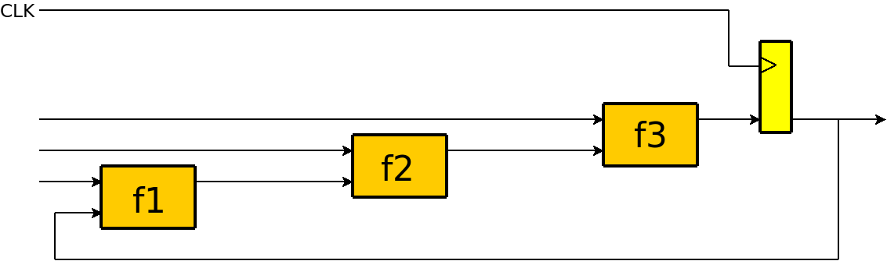
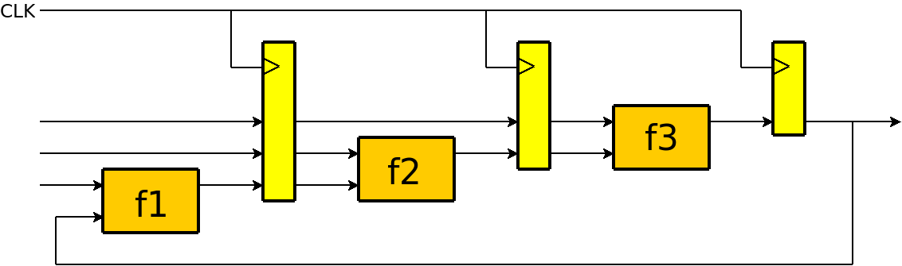
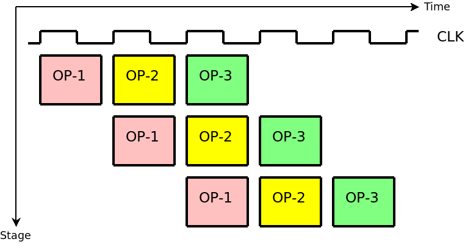

| Previous Lesson | Table of Content | Next Lesson |
|---|
In this short lesson we will give a brief overview of a design technique known as pipelining. Most readers will already be familiar with it; those readers should take a day off or proceed to the next lesson.
Assume we have a piece of combinational logic that happens to have a long propagation delay even in its fastest implementation. The long delay is then caused by the slowest path through the logic, which will run through either many fast elements (like gates) or a number of slower elements (likes adders or multipliers), or both.
That is the situation where you should use pipelining. We will explain it by an example. Consider the circuit shown in the following figure.

The circuit is a sequential logic which consists of 3 combinational functions f1, f2, and f3 and a flip-flop at the output of f3.
Let t1, t2, and t3 be the respective propagation delays of f1, f2, and f3. Assume that the slowest path of the combinational logic runs from the upper input of f1 towards the output of f3. Then the total delay of the combinational is t = t1 + t2 + t3. The entire circuit cannot be clocked faster than with frequency 1/t.
Now pipelining is a technique that slightly increases the delay of a combinational circuit, but thereby allows different parts of the logic at the same time. The slight increase in total propagation delay is more than compensated by a much higher throughput.
Pipelining divides a complex combinational logic with an accordingly long delay into a number of stages and places flip-flops between the stages as shown in the next figure.

The slowest path is now max(t1, t2, t3) and the new circuit can be clocked with frequency 1/max(t1, t2, t3) instead of 1/(t1 + t2 + t3). If the functions f1, f2, and f3 had equal propagation delays, then the max. frequency of the new circuit would have tripled compared to the old circuit.
It is generally a good idea when using pipelining to divide the combinational logic that shall be pipelined into pieces with similar delay. Another aspect is to divide the combinational logic at places where the number of connections between the pieces is small since this reduces the number of flip-flops that are being inserted.
The first design of the CPU described in this lecture had the opcode decoding logic (which is combinational) and the data path logic combined. That design had a worst path delay of over 50 ns (and hence a max. frequency of less than 20 MHz). After splitting of the opcode decoder, the worst path delay was below 30 ns which allows for a frequency of 33 MHz. We could have divides the pipeline into even more stages (and thereby increasing the max. frequency even further). This would, however, have obscured the design so we did not do it.
The reason for the improved throughput is that the different stages of a pipeline work in parallel while without pipelining the entire logic would be occupied by a single operation. In a pipeline the single operation is often displayed like this (one color = one operation).

This kind of diagram shows how an operation is distributed over the different stages over time.
To summarize, pipelining typically results in:
| Previous Lesson | Table of Content | Next Lesson |
|---|